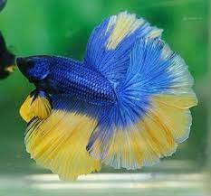

FAQ's

This one looks like my betta Cedric!
Q.Can Bettas live with other fish?
A. Absolutely! Just be careful when choosing because your betta can be aggresive if it's a male
Q.How big does a bettas tank have to be?
A. Great question! The general rule is bigger is always better but if you are space
conscious I would recommend a 5 gallon at minimum
Q.How long do bettas live?
A.Bettas can normally live anywhere from 2 to five years depending on how you care for them!
Q.At what temperature does a bettas tank have to be?
A.For a happy betta, keep their tank at about 75-80 degrees farenheit
Q.Can a betta live in tap water? A. No! You should always put in conditioner to prevent chlorine poisoning
Q.What is that clump of bubbles my fish is making in his tank?
A.That is a bubble nest! Your betta is a male and it is a sign
that he is healthy and happy in his home. Males make this when they are old enough to breed to hold his eggs.
Q.How do I know if my betta is happy?
A.Your fish will have bright, vibrant colors and swim around their tank a lot. He/she will have a big appetite and make a bubble
nest if its a male.
Don't see your question or want more info? click